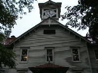

古びた中華料理店のラーメンが、すごく美味しかったりする。
今年で2010年代も終りということで、どこよりも早い2010年代洋楽アルバムベスト10を作って三田
Beerbongs & Bentleys - Post Malone
Blurryface - Twenty One Pilots
Beauty Behind The Madness - The Weeknd
Visions Of A Life - Wolf Alice
Scorpion - Drake
Funk Wav Bounces Vol.1 - Calvin Harris
ｂｌonde - Frank Ocean
Memories...Do Not Open - The Chainsmokers
Overgrown - James Blake
To Pimp A Butterfly - Kendrick Lamar
色々なことが言われたけれど，やっぱり2010年代はEDMな時代だったんですかね？
そんななか、いまだに衝撃的だったのはDJトム・ヨークです
ＤＪして、歌って、演奏して、踊って、走り回って・・・当然サンプリングは全部オリジナル
そこらのＤＪには絶対まね出来ない、ものすごいものを観させてもらいました
アクモンの「トランクイリティ・ベース・ホテル＆カジノ」がリリースされて以来、
犯罪映画（フィルムノワール）を観ることが多くなりました（笑）。ということでマイベスト10です。
サンセット大通り
現金に体を張れ
三つ数えろ
現金に手を出すな
チャイナタウン
マルタの鷹
めまい
郵便配達は二度ベルを鳴らす
ガス燈
飾窓の女
古い映画なので解り難いところもありますが、ハマると抜け出せません。
秋の夜長にトランクイリティ（静かの海）に想いを寄せながら古い映画を観る・・・最高にエモいひとときです。
黒船来襲
突如、霞ヶ関駅に掲示された、全面黒塗り行政文書風の来日告知広告。
ケン坊のうつむき具合がいつもより深く見えてしまうのは僕だけではないはず。
霞ヶ関駅 2018年7月中旬
ニンニクパワーで三振奪取だ！
大学の寮の近くの二郎（野猿）に行っていたという巨人鍬原投手を運良く球場で応援することができた。
ジロリアンがプロの強打者をねじ伏せていくさまはとても痛快であった。
東京ドーム 2018/7/3
桃ちゃんが紹介していた映画「ｅｓ（有）」がおもしろかったので、サスペンス・ホラー映画・マイ・ベスト10を作って三田。
第10位： ＩＴ イット“それ”が見えたら、終り。（無）
ピエロが笑ってしまうくらいめんどくさいヤツです。
映画は「スタンド・バイ・ミー（無）」的な青春の要素も入っていておもしろい。
第9位： 死霊館（無）
ドール物です。夜中に人形の前を通れなくなってしまいました。
ただキリスト教色が強いので、仏教神道の僕は相手にしてもらえそうにありません。
第8位： バイオハザード（ギリ無だったと思う）
くくりとしてはゾンビ物になるのでしょうか？
・・・にしてもミラ・ジョヴォヴィッチと（若い頃の）デヴィッド・ボウイとは顔が似ているよね！
第7位： ジェーン・ドウの解剖（死体だけど有）
解剖を進めていくうちにジェーン・ドウの過去が・・・
ホラーなのですがサスペンスの要素もあります。
第6位： チャイルド・プレイ（無）
ちゃちいパッペットと思うなかれ！
昔の人はがんばりました。ちびりそうになるくらい怖いです。
第5位： エスター（無）
いわゆるサイコ・ホラー物。心臓が止まりそうになってしまった。
エスターの正体がわかっていくにつれ怖くなっていきます。
第4位： ミスト（無）
閉じ込められ物です。
とにかく最後におどろかされる！
第3位： ローズマリーの赤ちゃん（無）
画像的にも音的にも怖くないのですが・・・
ひたすら心理に攻めてくる、名作中の名作です。
第2位： ドント・ブリーズ（無）
盲目のおじいちゃんがメチャ強い！ガクブル必至！
オードリー・ヘプバーンの「暗くなるまで待って（無）」の逆パターンですね。
第1位： シックスセンス（無だったと思う）
超有名なサイコ・サスペンス。
まだの人は何も検索しないで観て下さい。必ずビックリするよ！
注： カッコ内の有無はポロリを示す。
フィギュアスケートを観ていたら、オペラの名場面が次々と思い出されました。
ということでマイ・オペラ・ベスト10を作って三田。
サロメ
ワルキューレ
セヴィリャの理髪師
フィガロの結婚
夕鶴
カルメン
魔笛
蝶々夫人
椿姫
トゥーランドット
フィギュアスケートファンならトリノ、ピョンチャンとトゥーランドットの1位は当然の結果です。 ←そだね～
そして2022年は北京なのでこの曲を使用する選手がきっと増えることでしょう。 ←そだね～
にしても・・・ザギちゃんと一度でいいから握手がしたい！ ←そだね～
2018/1/2のひばりの行列は例年より長かった。
そこで並んでいる間、ヌーヴェル・ヴァーグで想いをめぐらせて三田。
女は女である
突然炎のごとく
去年マリエンバートで
シェルブールの雨傘
気狂いピエロ
死刑台のエレベーター
大人は判ってくれない
勝手にしやがれ
地下鉄のザジ
鬼火
想いをめぐらせるだけで、知的でお洒落な気分になれるのはさすがです。
あとアイドル好きの僕的には「海辺のポーリーヌ」なんかもお勧めですネ！みんな大好き、ポロリもあるヨ！
関西旅行で久しぶりにiPhoneの音楽をたっぷり聴くことができました。
ジャンルをフリーにすると全てアイドルになってしまうので、
今回は2017年現在でわりと若手（といってもチャート上位常連）の洋楽を聴いて三田。
Gameshow / Two Door Cinema Club
Stories / Avicii
Buauty Behind The Madness / The Weekend
Caracal / Disclosure
Snapshot / The Strypes
An Awesome Wave / Alt-J
channel ORENGE / Frank Ocean
The Colour In Anything / James Blake
Coexist / The xx
My Every Thing / Ariana Grande
ヒップホップやハウスは当然、ダブステップや２ステップなんかも普通に聴いてきたであろう音達ですね。
・・・にしても、もはやジャンルレスなポップ全盛ですな。
日本のベビメタが海外でもうけるはずですわ。
二郎君！あたし！来ちゃった！
行くかどうか迷ったのだが、行って良かった。
下手な観光地より感動したし、家では切符や写真を見ながら美味しいお酒を飲んでます。
他にも、NMB48劇場は当然、うかつにもラストで泣いてしまった映画「たまこラブストーリー」の聖地巡礼をしたり、
ずっと食べたいと思っていたラーメン屋で食べたり、大好きな鉄道の博物館に行ったり、
ベビメタちゃんの世界観をより理解するために伏見稲荷でお祈りしたりと、関西を満喫できた旅行でした。
古い音を聴いていたら、観る映画も古くなりました。
ということで黒澤明監督作品ベスト10をつくって三田。
蜘蛛巣城
酔いどれ天使
影武者
赤ひげ
天国と地獄
椿三十郎
用心棒
生きる
七人の侍
一番美しく
アイドル好きの僕にとって「一番美しく」の1位は当然の結果です。
戦時中の軍事映画でこんなに萌える作品があったとは！
追悼 チャック・ベリー
オールディーズ・マイ・ベスト10
Twist & Shout / Isley Brothers
Blue Suede Shoes / Carl Perkins
Jailhouse Rock / Elvis Presley
At The Hop / Danny & The Jouniors
Great Balls Of Fire / Jerry Lee Lewis
Sixteen Candles / The Crests
Flying Home / Lionel Hampton
Rock Around The Clock / Bill Haley & The Comets
Long Tall Sally / Little Richard
Johnny B. Goode / Chuck Berry
古き良きアメリカ・・・
ご冥福をお祈りします
今回もひばりの行列に並んで、家に帰って映画を観るという正月になりそう。
ということで、2016年時点で2010年代に公開された映画でBEST10を作って三田（下が1位）。
パシッフィック・リム
鑑定士と顔のない依頼人
百円の恋
バーレスク
ジャンゴ 繋がれざる者
最強のふたり
シンプル・シモン
マダム・イン・ニューヨーク
チョコレートドーナツ
シェフ 三ツ星フードトラック始めました
B級グルメ好きの僕にとってシェフの１位は当然の結果です。
一度でいいからあの料理を食べてみたい・・・
新潟の往復で久しぶりにiPhoneの音楽をたっぷり聴くことができました。
ジャンルをフリーにするとアイドルばかりになってしまうので、
今回は新潟出身のまなか（元欅坂）が大ファンだというワンオクを聴いてみました（下が1位）。
アンサイズニア
wherever you are
Deeper Deeper
Re:make
The Beginnig
Heareache
c.h.a.o.s.m.y.th.
完全感覚Dreamer
Decision
キミシダイ列車
まなかも車窓からの同じ風景を眺めながらワンオクを聴いて上京して来たかと思うと感慨深いものがありました。
あとワンオクに限らず日本人にはもう少し日本語の歌詞を増やしてもらいたいです。
K-POPが日本語や英語より韓国語が一番良いように。
それに英語はマシュー君（1975）や、ローレンちゃん（CHVRCHES）や、おなじみのノエルさんの方が上手ですから・・・
おめーらもそう思うだろっっっ～！！
嫌韓なんて言っていたらもったいない。お勧め韓国映画BEST５です。
第５位 JSA
38度線の南北共同警備区域で起きた奇妙な関係を描いた、韓国にしか撮れないサスペンス映画です。
政治色よりもサスペンス度が高い上質な娯楽映画となっています。
第４位 新しき世界
展開がダイナミック！映し方も雰囲気満点！
アメリカのギャング映画でも、日本のヤクザ映画でもない、韓国の暴力団映画です。
第３位 息もできない
暴力でしか自分を表現できない男と孤独な女子高生との関係を描いた、
これぞ映画といったような芸術性をも感じる素晴らしい映画です。
第２位 怪しい彼女
70歳の老女がひょんなことで、心はそのままに20歳に若返っちゃった！？！？
笑いの中に家族愛、恋愛、友情、出会いと別れ、老化といった人生に大切なことを盛り込んだ上質なコメディ映画です。
第１位 オアシス
脳性麻痺の女と社会に上手く適応できない男のラブストーリー。
これを観たら最後、他の障害者物の映画やTVドラマがヤワに観えてしまいます。
結果として、ベタで甘ったるい韓流を封印するといい映画になるということですかね。
レディオヘッドの「ア・ムーン・シェイプト・プール」を聴いていたら90年代が懐かしくなったので（笑）、
90年代にリリースされたアルバムのベスト10を作って三田（アイドルを除く）。
空中キャンプ / フィッシュマンズ
パークライフ / ブラー
ファンタズマ / コーネリアス
メタリカ / メタリカ
ネヴァーマインド / ニルヴァーナ
カリフォルニケイション / レッド・ホット・チリ・ペッパーズ
オアシス / オアシス
ブラウン・シュガー / ディアンジェロ
OKコンピューター / レディオヘッド
ザ・ミスエデュケーション・オブ・ローリン・ヒル / ローリン・ヒル
ミニスカ制服姿で思い悩む「天使にラブ・ソングを２」のローリンちゃんはたまりません・・・
メタリカさんはSU-ちゃんの影響大DEATH!!!
あまり期待しないで観た「デッドプール」が、「ウルヴァリン」の時とは少し違っていて以外とおもしろかったので、
ヒーロー映画ベスト10を作って三田。
X-MEN ： ヒューチャー＆パスト
マイティー・ソー
ファンタスティック・フォー
アントマン
キャプテン・アメリカ / ウィンター・ソルジャー
ガーディアンズ・オブ・ギャラィシー
アイアンマン
アベンジャーズ
ダークナイト
キック・アス
アイドル好きの僕にとって「キック・アス」の1位は当然の結果です。
一度でいいからヒットちゃんに けちょんけちょん にされたい・・・
新潟の往復で久しぶりにiPhoneの音楽をたっぷり聴くことができました。
ジャンルをフリーにするとアイドルばかりになってしまうので、
今回は2016年時点で2010年代のアメリカをテーマに聴いてみました（下が1位）。
1989 / Taylor Swift
Sonic Highways / Foo Fighters
I'm With You / Red Hot Chili Peppers
Recovery / Eminem
Watch The Throne / Jay-Z & Kanye West
G I R L / Pharell Williams
My Beutiful Dark Twisted Fantasy / Kanye West
good kid m.A.A.d city / Kendrik Lamar
Black Mesiah / D'Angelo & The Vanguard
To Pimp A Butterfly / Kendrik Lamar
ご覧の通り現代のラッパーが放つヒップホップにどっぷり浸かっている次第であります。ハイ。
（ただ、あくまで本業はドルヲタです。←これ大事）
アフリカ系アメリカ人の怒り、恐怖、偽善、劣等感、奇妙な優越感などが激しくぶつかりあい粉々に砕け散り、
僕の頭の中に絶え間なく降り注いでくるこの感じを、
ファーガソンやスタテンアイランドのようなことが起こってしまったり、
トランプ氏の集会予定地でケンドリック・ラマーの Alright がチャントされたりする
今この時、この空気感の中で聴く意義はとてもあると思います。
あと、カニエ・ウェストが何とかマッカートニーとかいうすごく才能のある人を見つけてきたので注目したいです（笑）。
2016.4
2016年3月5日（土） 晴 アートたけし展に行った。
ということで、北野武監督作品ベスト10です。
⑩ アウトレイジ ビヨンド
⑨ アウトレイジ
⑧ あの夏、いちばん静かな海。
⑦ BROTHER
⑥ 菊次郎の夏
⑤ その男、凶暴につき
④ キッズリターン
③ 座頭市
② ソラチネ
① HAMA-BI
2015年の夏は乃木坂ちゃんのチケットが取れなかったので、ベビメタ目当てでサマソニに行ってきました。
TEMPRA KIDZ / がらがら
きゃりーちゃんのバックダンサーをしていたユニットです。かわいかった。
きゃりーぱみゅぱみゅ / アリーナ後方
春に初二郎したきゃりーちゃん（参考文献参照）。ヒット曲のオンパレードでした。新曲も披露してくれた。
ECHOSMITH / アリーナ中盤
青春ロックバンド。ボーカルのシドニーちゃんはなんと現役女子高生！萌えた！
ALL TIME LOW / 中盤
青春パンクバンド。ノリノリで楽しかった。
BABYMETAL / 前方
MCが事実上の黙認発言をしてしまった為物凄い事になってしまいました。
グチャグチャ、ビチョビチョ、ゴツゴツ、ピョンピョン、グルグル、クチャクチャ、ドクドク、ワーワー、クルクル、ヨロヨロ・・・
疲れましたが普段できない経験ができてとても楽しかったDEATH！
ARIANA GRANDE / １階スタンド
ベビメタで体力を消耗してしまったのでアリーナはあきらめてスタンドへ。
最初は綺麗なおねえさんが歌っているだけだと思っていたのですが、
さすがは今のポップの中心にいる人だけあって、除々に引き込まれて行き最後には夢中になっている自分がいました。
THE CHEMICAL BROTHERS / １階スタンド
世界中のフェスでヘッドライナーを務めてきているだけあって圧巻のステージでした。
YouTubeのあれが生で観られたのです。とても凄かった。
サマソニ恒例のステージ後の花火も含めて本当に楽しいのライヴでした。
BAIO / 最前
ここからは HOSTESS CLUB ALL-NIGHTER です。
開場後すぐに行ったので最前が取れました。
ライヴはヴァンパイア・ウィークエンドのベーシストなのでそんな感じの音でした。
THOM YORKE TOMORROW’S MODERN BOXES / 最前
ライヴが始まるとそこにはナイジェル・ゴドリッチの姿がありました。
ライターの中村明美さんに「過去10年に観たライブでベスト10に入るくらい良かった」と書かせた2013年NYでのライヴの再
現です。
しかもニューアルバム配信後のステージは今回と大阪とパリのみという超レア！（←いかにもらしい）
一気に眠気が吹っ飛びました。
パフォーマンスも「最高！」としか言いようがない。他に余計な感想を付け加えたくないくらいです。
更にステージが終了してオーディエンスが引き始めたころ、再びステージに登場して１曲(Default)披露するというサプライズ
付き。（←いかにもらしい）
曲が終了した後の「どうです、驚いたでしょう？」と言いたげな茶目っ気のある笑顔が印象的でした。
帰りに食べたラーメンがメチャクチャうまかった。
意識して水分、塩分を取っていたつもりでしたが足りなかったのでしょうね。
「007スペクター」を記念して007ベスト10を作って三田。
第10位 007消されたライセンス
ティモシー・ダルトンはこっちの方が好き。
第９位 ネバー・セイ・ネバー・アゲイン
ショーン・コネリーが16年ぶり復帰した番外編。本家「007サンダーボール作戦」よりシンプルなのがいい。
第８位 女王陛下の007
人気の低いジョージ・レーゼンビーですが、シリーズとして絶対外せない作品。
第７位 007ユア・アイズ・オンリー
世間的にはロジャー・ムーアではこれが高評価。
第６位 007ゴールドフィンガー
一般的なランキングでは本作か「007ロシアより愛をこめて」が1位でしょう。
第５位 007カジノロワイヤル（1967年公開版）
ドタバタでハチャメチャな番外編なのですが、壊れ方が現代アートのように不思議とまとまっているユニークな作品。
第４位 007ダイ・アナザー．デイ
ピアース・ブロズナンではこれが一番好き。
第３位 007ムーンレイカー
007が宇宙に行っちゃいました。奇想天外なのだがなぜか違和感がない。
第２位 007は二度死ぬ
ショーン・コネリーが日本人になったり、浜美枝がビキニで野山を駆け回ったりと僕好みの「？」なシーン満載の作品。
第１位 007スカイフォール
なんていったって最新作（2015/6現在）が一番！というか最新作でなくてもかなり良い出来なんですけど!!!!!
会津若松の往復で久しぶりにiPhoneの音楽をたっぷり聴くことができました。
そこで今回はマイ・ベスト・アルバム・トップ５をご紹介したいと思います。
ジャンルをフリーにするとアイドルばかりになってしまうので、ここではロックに絞ります。
第５位 BABYMETAL / BABYMETAL
2014年のNo.1アルバムはフーファイでもテイラーちゃんでもコールフドプレイでもカサビアンでもバンプでも林檎姫でもでもな
くこの１枚です。
2014/2/7OAのMステで受けた衝撃はいまだに忘れられません。SU-METALがキツネサインを頭上高く掲げたその時ロック
の歴史が動いた！
あっ！ベビメタはアイドルではなく、メタルということで・・・（汗）
第４位 大発見 / 東京事変
「本能」の商業的成功によってカート・コバーンの様になってしまった姫でしたが、東京事変で魔の27歳を乗り越えることが
できました。
ちなみに元乃木坂のまりっかも好きだと言っていました（これが一番の理由かも）。
それにしても東京事変の解散は本当に残念。ソロだとやりたい放題な感じがするので（笑）。
第3位 キッドA / レディオヘッド
レディヘと二郎は何かと共通点が多いと思います。①１回目は何だこりゃ。２回目でちょっと良いかも。３回目でハマル。②
好き嫌いがはっきり分かれる。③中毒性が高い。④レディヘはロックではなくレディヘというジャンル。⑤アルバム（店）ごと
に味が違う。⑥音（味）が奥深く複雑で重い。⑦人気、実力ともにあるのに一般大衆に指示されない。⑧トム・ヨーク（店主）
の個性が魅力的。⑨アトムス・フォー・ピースは富士丸？ちょっと違うか！⑩見た目がきたならしい（笑）。
第２位 ギヤ・ブルース / ミッシェル・ガン・エレファント
単純にガレージみたいなのが好きなんです。元AKB48のまゆゆも好きだと言っていました（これが一番の理由かも）。
この時代だとアジカン、エルレ、パーフリ、オザケン、デリコ、モンパチ、ハナレグミ、ゆら帝、コーネリアス、ナンバーガール、
フィシュマンズ、スーパーカー、電気といったところも好きです。
第１位 AM / アークティック・モンキーズ
サマソニのヘッドライナーとしてステージに立つ、髪型をリーゼントにきめたアレックス・ターナーの表紙（ロッキング・オン
2014年10月号）を見た瞬間に僕の体に大電流が流れました。「ロックは永久不滅だ！（ブリット・アワーズ2014より）」
アクモンの「AM」がリリースされた2013年はデヴィッド・ボウイの突然の復活劇に始まって、ストロークス、アーケイド・ファイ
ア、ジェイク・バグ、アトムス・フォー・ピース、ヴァンパイア・ウィークエンド、ダフト・パンク、JPOPではRADなど僕の好みに合
ったアルバムが多くリリースされた当たり年でした。
本当はオアシスも入れようと思ったのですが、ノエル・ギャラガーが自身のブログでAKBをｄｉｓったのでやめました。
ちなみにあっちゃんは2015/3/23OAの自身のラジオ番組で「ノエルさん大好き！」と言っていました。
あっちゃんの方が遥かに大人ですな。
最後に、ロックを語るつもりが結局アイドルを語ってしまったことにたいし深くお詫び申し上げます m（＿ ＿）m
ラーメン、アイドル、アニメといったB級なものが好きな僕は当然ティム・バートンも好きなわけです。
ということで「BIG EYES」を記念してベスト10を作ってみました。今回も上が10位で下が1位です。
FRANKENWEENIE
PLANET OF THE APES
SWEENEY TODD：THE DEMON BARBAR OF FLEET STREET
SLEEPY HOLLOW
ED WOOD
THE NIGHTMARE BEFORE CHRISTMAS
EDWARD SCISSERHANDS
BEETLEJUICE
TIM BURTON'S CORPSE BRIDE
BIG FISH
★SAPPORO★

旬のサンマが信じられないくらいに美味かった。札幌の回転寿司のレベル高っ↑
次回は北＆東パスで急行はまなすを使って、移動もイベントにして行きたいです。
- - - - -

・・・ということで北＆東パスで急行はまなすを使って行ってきました。
新幹線や豪華特急よりもローカル線や18きっぷに強く引かれる僕にとっては夢の様な1週間でした。
特に青森弁の夏合宿らしき女子高校生に囲まれた時は超絶萌え～でした。
チーム８のよこちゃん（青森県出身）に推し変決定！
兵庫夏の陣
大観衆による大音量の大声援。蒸し暑いなかに流れてくる浜風。二軍の球場とはぜんぜん違う天然芝。完全アウェイ。
「神×巨」と「巨×神」とではまったくの別ものでした。
野球の聖地 2014真夏
球団創設80周年を祝うため集まった総勢202名のレジェンドと日本一22回のペナントやトロフィーに向かって整列した巨人と
阪神の開幕メンバーを前に国家を斉唱するSMAP
開幕戦は他のどの試合でも感じることのできない独特の雰囲気があった。
生で観ると選手の緊張感が直に伝わってきたし、観客も久しぶりの公式戦を一球一球楽しんでいる感じであった。
東京ドーム 2014/3/28
摩訶般若波羅蜜多心経ああああああああ
観自在菩薩行深般若波羅蜜多時照見五
蘊皆空度一切苦厄舎利子色不異空空不
異色色即是空空即是色受想行識亦復如
是舎利子是諸法空相不生不滅不垢不浄
不増不減是故空中無色無受想行識無眼
耳鼻舌身意無色声香味触法無限界乃至
無意識界無無明亦無無明尽乃至無老死
亦無老死尽無苦集滅道無智亦無得以無
所得故菩提薩タ依般若波羅蜜多故心無
ｹｲゲ無ｹｲゲ故無有恐怖遠離一切ﾃﾝ倒夢
想究竟涅槃三世諸仏依般若波羅蜜多故
得阿耨多羅三藐三菩提故知般若波羅蜜
多是大神呪是大神呪是無上呪是無等等
呪能除一切苦真実不虚故説般若波羅蜜
多呪即説呪曰あああああああああああああ
耨諦耨諦波羅耨諦波羅僧耨諦菩提薩婆訶
般若心経あああああああああああああああ
人を批判することでしか自分を見出すことができない悲しい僕の心を正すべく写経をしてみました。
集中して入力していたら、だんだんリラックスしてきて気持ちがスッとしてきました（変換できない文字はカタカナ）。
展望スポット巡りをして眺望をながめていたら当然の様に思うことがありました。
「あの山からこちらを見たらもっと絶景だろうな！」
そこで今回はいくつか登った山のうちベスト５をご紹介します。
第５位 高尾山（６号路→山頂→４号路→１号路） 599m
ハイキングというよりウォーキング。土産物屋、茶屋多数有り。山ガールも大勢いる。手ぶら、普段着でOK！
都会の公園とあまり変わりないが、４、６号路は深山の雰囲気が楽しめて良かった。眺望もまあまあ。
第４位 大山（ヤビツ峠経由） 1251m
東京から見ると山塊の南端に見える、ずっと登りたいと思っていた綺麗な三角形をした山。
ハイキングコースも整備されていて登り易い。眺望はなかなか。巨人の原監督、菅野投手も毎年登っているらしい。
第３位 筑波山（女体山） 877m
こちらも東京から良く見える山。眺望も東京から見て想像していた通りの絶景。
ロープウェイも通っているが、岩場が多く変化のあるハイキングコースの方が絶対に楽しい。
第２位 三の塔（ヤビツ峠経由） 1205m
初中級向けながら、その分ハイキングの楽しさを満喫できた。山奥で1000m以上登ると空気が明らかに下界と違う。
富士山が絵画のように美しい（カレンダーにもなっていたくらい）。頂だけでなくコース沿いからの眺めも最高だった。
第１位 弘法山（秦野駅→鶴巻温泉駅） 235m
標高は低いものの表丹沢、相模湾、伊豆大島、富士山等の眺望がとても良かった。
コースも尾根を沿って歩く、静かでとても気持ちの良いものだった。しかもほとんどが国定公園内。
（ミシュランの調査員が来なくて本当に良かった。）
さらにコースの終りには温泉がある。車を使わない駅から駅へのコースなので、温泉の後はビールも楽しめる。
春には桜、夏には蛍も楽しめるそう。
三の塔（この日は少しガスっていた）
あと一連のハイキング中にマミチャジナイ、アカゲラとの新たな出会いがありました。
どちらも都内ではめったに観察できない野鳥なのでとてもラッキーでした。
海街photgraph
勧められて読んだコミック「海街diary」が良かったので、その舞台である鎌倉・江ノ島に行ってみました。

何度も行ったことのある鎌倉・江ノ島ですが、少し違った角度から楽しめた小旅行でした。
生が一番！
AKB48 パジャマドライブ公演 2013/5/28
AKBのレポは何度もしているので、気になった6人だけ。
まずは（スキャンダルで丸坊主になった）みいちゃん。やはりパフォーマンスはズバ抜けていました。
いまだに一部のヲタにはウダウダ言われていますが・・・女性に本気で謝罪されたら、許してやるのが男だろ！
次は研究生で一番人気のこじまこ。握手会では選抜メンバー並の人気なのですが、この日はお疲れ気味だったかな？
もえは中学生とは思えないお色気ムンムンで凄かった。判りやすく言えば研究生のともちんです。
正規メンバーになって、本格的なお洒落が解禁になる日が今から待ち遠しい。
なぁちゃんも失恋曲等の暗い曲がよく似合う、不思議な逸材でした。
さっほーも中高生が多い中、少し違った年上の良さが出ていてかわいかった。
最後はみき。まゆポジだし、運営推しだし、中２なので、行く前までは今ひとつだったのですが・・・
小さく細い体で目一杯に頑張るパフォーマンスは、ひた向きな一所懸命さがビンビンに伝わってきました。
お見送りのハイタッチでは、ハイタッチなのに（満面の笑みで）ギュッと手を握られてしまいました。
釣りだと分かっていてもドキドキしちゃいましたョ。
メンバーにもよりますが、現在の研究生公演は正規チームの公演よりも神です！
アイドルには抵抗感がある人がいるようですが、そうゆう人にほど一度でいいから劇場に行ってもらいたいです。
噂に聞いているのと、実際に見るのとでは大違い！
- - - - -
FIFAワールドカップアジア最終予選 日本代表×オーストラリア代表 2013/6/4
先行販売に申し込んだらアッサリ当たってしまいました。
後日金券屋を覗いたら正規の値段の11倍になっていました・・・じぇじぇじぇ～！！！
試合前のマスコミの報道量もすごかったので、いやでもハイテンション状態で行ってきました。
発表されたスタメンはザックジャパンのベストメンバー。心配されていた本田、岡崎もスタメンでした。
新代田二郎の助手に似た選手も出ていましたよ（←これが言いたかった笑）
注目の大一番は、いつも観ている国立や味スタでのFC東京戦とはぜんぜん違いました。
いままで経験したことのない大歓声で、一体感が半端なかったです。
特に本田のPKの時は、全員総立ちで、客席でも連れと会話ができなくなるくらいの大歓声でした。
しかも史上初ホームで本戦出場を決めた歴史的瞬間に立ち会えたということで感動も最高潮だった。
テレビよりも、パブリックビューよりも、スポーツバーよりも、渋谷の交差点（笑）よりも・・・スタジアムは最高でした。
試合後オーストラリア人が「W杯出場おめでとう」と英語で言いながら日本人とハイタッチしていたのが微笑ましかった。
この日の夜は興奮が冷めなくて朝方まで寝付けなかったです。
村上春樹の長編小説を二郎各店に例えてみた
風の歌を聴け：亀戸、1973年のピンボール：藤沢、羊をめぐる冒険：相模大野、世界の終りとハードボイルド・ワンダーラン
ド：関内、ノルウェイの森：神保町、ダンス・ダンス・ダンス：桜台、国境の南,太陽の西：西台、ねじまき鳥クロニクル：小金
井、スプートニクの恋人：中山、海辺のカフカ：三田、アフターダーク：歌舞伎町、1Q84：八王子野猿、色彩を持たない多崎つ
くると,彼の巡礼の年：目黒
スカイツリーに昇って以来、都内の展望スポットに昇るのがマイブームになりました。
そこで今回は、無料で昇れるおすすめベスト５をご紹介致します。
第５位 東京スカイツリー イーストタワー 30，31階
スカイツリーは大混雑で値段も高いのでなかなか昇れませんが、隣のビルなら無料で、すぐに昇れます。
ただ、北と東しか見られません。
第４位 キャロットタワー 26階
都内では比較的西にあるビルなので富士山が近いです。
ただ、都心方面はレストランなので有料となってしまいます。
第３位 都庁 45階
有名な展望スポットだけあっておすすめです。無料では一番高いのでは？
ただ、ツインタワーみたいな造りなので一方向が見えません。あと、周りが高いビルだらけなのであまり高く感じない。
第２位 シビックセンター 25階
ガラスが斜めになっているので映りこみが少なくクリアに展望できます。スカイツリーが良くみえる。
ただ、ここも都心方面はレストラン。
第１位 タワーホール船堀 115m（30階相当）
高さはそれほどないのですが、周りに高いビルがないので良くみえます。しかも視界は360°
（ちなみに、横浜マリンタワー（106m）、千葉ポートタワー（113m）より高い。）
東京の見所は、以外と東からがよくみえます。
スカイツリー、ディズニー、レインボーブリッジ、ゲートブリッジ、アクアライン、葛西の観覧車、東京タワー、都心のビル郡等。
山も、富士山はもちろん、大山、丹沢、多摩、秩父、赤城山、筑波山等がよくみえます。
房総半島、三浦半島も東京湾に沿ってよくみえます。
風景の解説図もあります。運が良ければディズニーの花火もみられます。
しかも、無料なのにエレベーターガール付きだったり、展望室にBGMが流れていたりします。
以外と知られていないのか、夜は誰もいないこともあるので、夜景をみながらチューもできちゃいます（笑）。
故大島渚監督の「戦場のメリークリスマス」を観ていたら、デヴィッド・ボウイがかっこよかったので少し調べてみました。
以下、良かったYouTubeのベスト５をご紹介します。
第５位 Yourng Americans
イギリスからアメリカに渡ったボウイが、1974/12/4にNBCの番組に出演した時のものです。
AFNを聴いていると今でも時々流れるので、アメリカ人は結構この曲が好きみたい。
ただ観てもらうと判るのですが、痩せ過ぎで、声の張りもなく、ちょっといっちゃってます。
第４位 Let's Dance
RCAからEMIに移籍してメインストリームで行ったシリアス・ムーンライト・ツアーの時のものです。
（この動画は1983/9/2のバンクーバー公演のもの）
「戦場のメリークリスマス」は1983/5/28公開なので、時代的に一番近くて良かった。
第３位 Heroes
ハンザ・スタジオでブライアン・イーノと作り上げたベルリン三部作の中核をなす傑作です。
この動画は1977/9/9イギリスで放映されたマーク・ボランのテレビ番組「マーク」に出演した時のもの。
ちなみにアルバムアートワークの撮影は、AKB48の「桜の木になろう」のPVを撮影した鋤田正義。
第２位 Starman
世界一有名な音楽番組BBC「トップ・オブ・ザ・ポップス」に1972/4/14に出た時のものです。
この時代のボウイにしてはわかりやすい英語で、救世主をテーマにした夢のある歌詞が良いです。
このせいなのか、日本人が一番好きなボウイの曲はこの曲だそうです。
第１位 Ziggy Stardust
ロック史に残るほど有名な、1973/7/3ハマースミス・オデオンで行われた伝説のライブです。
（AKBに例えるならば、秋葉原が泣いた2012/8/27の前田敦子卒業公演といったところ）
今は亡きミック・ロンソンのギターがウィンウィン唸っていてかっこいい。ちなみに衣装は山本寛斎。
最後まで付き合ってくれた人へのお得情報
「戦場のメリークリスマス」のDVDはレンタル店では置いていない店が多いみたいですが、港区の図書館にはありました。
ただ2013年2月現在予約でいっぱい。でもLDなら禁帯出なので みなと図書館内で観ることができます。
そこにいる全員が歌う
チャペルで行われたクリスマス音楽礼拝に参加しました。
神様のお恵みが、皆様にも豊にありますように・・・アーメン。
明治学院 2011/12/23

よっしゃぁ～ 行くぞぉ～！ by ハチ公
現代の忠犬は、アイドルに忠実なヲタ公でした。
0ズレでレスをもらっていて、今にもMIXを打ちそうであった。
渋谷 22年秋

鉄分補給
鉄分切れだったので、撮り鉄にとって鉄板のお立ち台に立ってみました。
写真は10月に中央線より引退してしまった、201系最後の編成です。
御茶ノ水 22年9月
廃墟萌え
根岸競馬場一等観覧席跡です。
遠くに横浜の街並みを望むことができる、メチャお洒落な廃墟でした。
根岸 21年秋
VR38DETT
3.8liter twin-turbocharted 24valveV6
Power-353kw@6,400rpm Torque-588Nm@3,200-5,200rpm
Nov 01,2009 TokyoMotorShow
夏の終わり～秋の始まり
鱗雲、曼珠沙華、赤とんぼ、百舌鳥の高鳴き・・・
ようやく涼しくなって来ましたね。
五井 21年9月
玉屋～ 鍵屋～
本当は田舎のマッタリした花火大会の方が好きなのだが、今年もいつもの近場でガマン・・・
のはずが、風向きに恵まれ綺麗に観ることができました。
東京湾大華火祭 21年夏
アムロ、行きまーす！
お台場に突如出現した実物大ガンダム。
どうにかこうにか、良さげな写真を撮る事ができました。
お台場 21年7月

水辺の宝石
ここでは人の手により、給餌・繁殖されているカワセミ。
写真はこれからの子育てに備えている♂だそうです。
石神井公園 20年初春
富士二重丸
冬晴れの日の大観覧車からの、富士の眺めは◎！
なにしろ富士山の方向に向けられて建てられていますから！
葛西臨海公園 20年冬
荒海に向かって
荒海に向かい、彼は何を思っているのだろうか？
初心に帰りたい時はいつも千葉の海が見たくなる僕です。
外房 19年初冬
orz
地獄覗きを体験するつもりでしたが・・・
無理でした。
鋸山（富津） 18年春
2006
今年も二郎食うぞ～
そこで美人を助けて、二郎男になるぞ～
東京タワー 18年正月
夢見心地
上野動物園にラーメンの修行（写真の練習）に行って来た。
動物達の豊かな表情が愉快であった。
上野動物園 17年初春
ＰＣ店